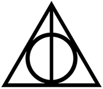

The final two movies outline the last year of Harry's time at Hogwarts, or what it would have been if not for his mission to find and destroy Voldemort's Horcruxes. This time frame brings to conclusion everything that Harry has learned, the sacrifies him and the Hogwarts defenders have made, and the ultimate battle between good and evil. The movies bring the series to its conclusion, ultimately with the defeat of Voldemort.
The Deathly Hallows
Part 1
After unexpected events at the end of the previous year, Harry, Ron, and Hermione are entrusted with a quest to find and destroy Lord Voldemort's secret to immortality - the Horcruxes. It is supposed to be their final year at Hogwarts, but the collapse of the Ministry of Magic and Voldemort's rise to power prevents them from attending. The trio undergo an arduous journey with many obstacles in their path including Death Eaters, Snatchers, the mysterious Deathly Hallows, and Harry's connection with the Dark Lord's mind becoming stronger.

The Deathly Hallows are three magical objects that appear in the final two movies. They consist of the Elder Wand, the Resurrection Stone, and the Cloak of Invisibility. According to the wizarding legend, they can provide mastery over death if one person owns all three. Each of the items play a crucial part in these movies, and particularly in the fight against Voldemort. The symbol of the Deathly Hallows represents the three objects: the Wand (line), the Stone (circle), and the Cloak (triangle).
Part 2
After destroying a Horcrux and discovering the significance of the three Deathly Hallows, Harry, Ron and Hermione continue to seek out the other Horcruxes in an attempt to destroy Voldemort, who has now obtained the powerful Elder Wand. The Dark Lord discovers Harry's hunt for his Horcruxes and launches an attack on Hogwarts, where the trio return for one last stand against the dark forces that threaten both the Wizarding and Muggle worlds.
The breaking point in this final movie and in the fight against Voldemort was Harry finding out that he is a Horcrux himself. When Voldemort's killing curse failed to work on Harry, a piece of his soul latched on to one-year-old Harry, making him one of the dark wizard's Horcruxes. After realizing this, Harry sacrifices himself in order to defeat Voldemort once and for all, yet enters a state of limbo when Voldemort performed a succesful killing curse on him, where he met the spirit of Albus Dumbledore and later chose to come back to life. After returning to the living, all the Horcruxes were destroyed, and Voldemort was ultimately defeated.
The movie ends with a flash-forward to Harry's life 19 years later, where he is sending his kids off to Hogwarts along with his wife, Ginny Weasley, as well as Ron and Hermione and their own kids.